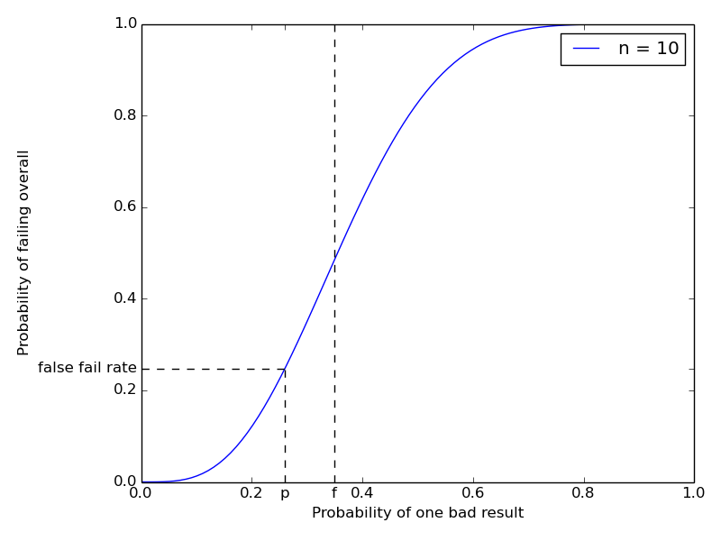
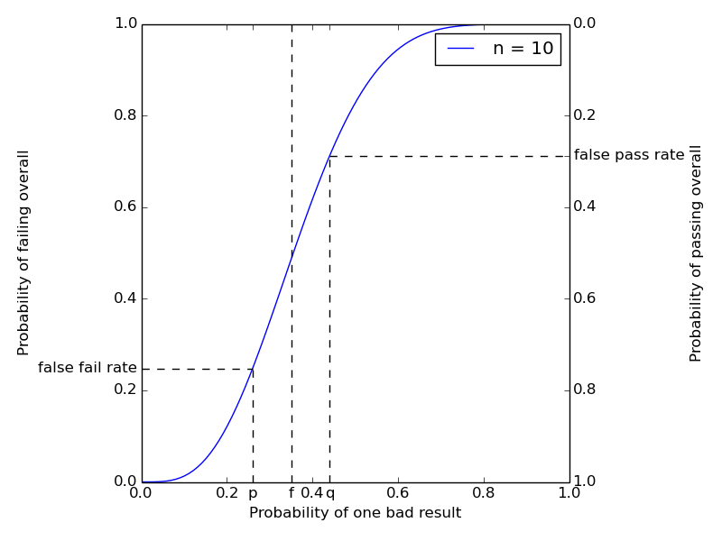

Testing traditional software strives for an ideal of exact determinacy: If a test fails, there is a bug and the developers must investigate; and if a test passes, the bugs it is testing for are not present, so development can proceed without worrying about them. This is not possible with probabilistic programs—even a correct sampler for a probability distribution always has some chance of producing arbitrarily weird output by bad luck, and an incorrect one can equally well look fine by coincidence. In this piece, I want to lay out my current thinking on what to do about this problem.
Contents
- A General Case
- Test Framework
- Statistical Optimizations
- Computational Optimizations
- Composition
- Conclusion
- Acknowledgements
- References
- Notes
A General Case
I’d like to start by investigating as general a probabilistic testing situation as I can think of, and then refine what we find in a few directions.
Consider the following stochastic testing scenario.
Here is a black box, \(\F\), which performs some arbitrary stochastic computation under test and somehow evaluates whether the result is good. I consider the behavior of \(\F\) acceptable if its probability of reporting a bad result is less than \(p\).
For instance, one might test a program for, say, Gaussian process function learning, by showing it examples drawn from a known function, running training for a while, and asking it to extrapolate to a new input point. Presumably one cannot analytically predict what the extrapolation distribution should be, but one can call a trial “good” if it’s within some distance of the true function’s value there. Presumably one also cannot analytically predict the probability that a correct training pipeline will still extrapolate badly on this example by chance; but one could make up a plausible minimum rate of success and claim that the whole training pipeline works “well enough” if it produces “bad” extrapolations at most \(20\%\) of the time.
What is a testing framework to do with a test like this? At this interface, the only thing that can be done is to run the black box some number of times \(n\), and report the overall test as having failed if the black box reports bad results at least some fraction \(f\) of the time.1
Significance
How well does this work? For any given \(f\) and \(n\), we can compute (an upper bound on) the probability that a correctly-implemented \(\F\) will nonetheless fail such a test by chance.2 This probability is called the statistical significance of the test.3 Here’s a chart showing how the probability of failing a \(10\)-trial test with cutoff \(3\) (marked at \(f = 0.35\)) varies with the true bad result rate of \(\F\).

The figure marks an example value for the “no bug” probability \(p\) at \(0.26\) and traces the false fail rate (\(\approx 0.2479\)) thus obtained. Changing \(f\) moves the inflection point of the curve, and increasing \(n\) makes the curve steeper.
The false fail rate bound is given by the worst still-acceptable behavior of \(\F\), namely to report a bad result with probability exactly \(p\). In this case, for the overall test to fail we must see at least \(fn\) bad results in \(n\) trials, the probability of which, \[ \sum_{i=\lceil fn \rceil}^n {n \choose i} p^i (1-p)^{n-i} = 1 - \textrm{CDF}_{\textrm{binomial}(n, p)}(fn), \] is given by the survivor function of the binomial distribution on \(n\) trials with probability \(p\). This quantity is readily computable, and tends to zero as \(n\) tends to infinity, provided \(f > p\). In other words, if we set the bad result rate cutoff \(f\) above the maximum acceptable true probability of bad results \(p\), we can drive the probability of false alarms in our test suite arbitrarily low (but never to exactly zero) by spending more computation (increasing \(n\)). As far as false alarms go, this is the next best thing to ideal testing.
Power
So far so good. But, of course, we don’t need any of this math to make a very fast test with a very low rate of false alarms—just always pass! Testing has another desideratum, namely keeping the chance of passing despite the presence of bugs down as well. This chance is called the statistical power.4
Unfortunately, it is not possible to obtain high significance and high power at once when trying to arbitrate an infintely fine boundary with a finite amount of computation. If we want high significance, then however large we may set the number of trials \(n\), we have to set the decision boundary \(f\) at least a little larger than the “acceptable” bad result rate \(p\). But then, if the true bad result rate of \(\F\) is, say, between \(p\) and \(f\), this is nominally “a bug”, but the chance of detecting it and failing the overall test will not be high.
So we have to fall back one more time, and say that we will tolerate our test suite being unable to reliably catch bugs with “small” consequences, provided it has high power against bugs whose effects are “severe enough”. This idea is often called the effect size in the statistical hypothesis testing literature.
To wit, we can name an arbitrary \(q > p\) and say that \(\F\) exhibits a “severe bug” if its true probability of reporting a bad result is at least \(q\). We can add this \(q\) to our chart:

The curve now also gives the probability of passing (right scale) the overall test. The updated figure now marks an example “severe bug” probability \(q\) at \(0.44\), and traces the false pass rate (\(\approx 0.2877\)) thus obtained. Moving the inflection point by changing \(f\) trades off significance for power in a given experimental design. Making the curve steeper by increasing \(n\) offers greater significance and power at once, at the cost of additional computation.
Formally, a test consisting of \(n\) trials and failing if at least an \(f\)-fraction of them are bad will have a false pass rate of at most \[ \sum_{i=0}^{\lfloor fn \rfloor} {n \choose i} q^i (1-q)^{n-i} = \textrm{CDF}_{\textrm{binomial}(n, q)}(fn). \] This quantity is also readily computable, and also tends to zero as \(n\) tends to infinity, provided \(f < q\). So for any desired significance and power, and any finite effect size to be detected, we can construct a test with those characteristics by picking some \(p < f < q\) and some sufficiently large \(n\). (Which we might as well minimize subject to these constraints.)
Test Framework
So here we have four variables of interest to whoever is running the test suite:
Statistical significance, or probability of a false alarm even if the tested system works;
Effect size, or some measure of the severity of the effects of bugs with detection guarantees;
Statistical power, or the probability of a false pass even if the tested system actually contains a severe bug; and
Computational cost of the test.
A test framework can permit the operator to specify any desired three of these (e.g., by command line arguments) and deduce the fourth (and the allowable bad result rate, which is needed for running the test but is not otherwise interesting). Here is a Python function that computes \(n\) and \(fn\) from \(p\), \(q\), the significance, and the power:
from scipy.stats import binom
def design(p, q, sig, pwr):
# p is the max bug-free probability of a bad trial
assert p >= 0 and p < 1
# q is the min severe-bug probability of a bad trial
assert q > p and q <= 1
# sig is the desired max probability of a false fail
assert sig > 0 and sig <= 1
# pwr is the desired max probability of a false pass
assert pwr > 0 and pwr <= 1
n = 1
while True:
# Minium k for the desired false alarm rate is given
# by the inverse survivor function of the binomial
# distribution
min_k = binom.isf(sig, n, p)
# Maximum k for the desired false pass rate is given
# by the inverse CDF of the binomial distribution
max_k = binom.ppf(pwr, n, q)
if max_k > min_k:
# scipy's fenceposts are such that running n
# trials and failing if strictly more than min_k
# of them are bad achieves the requested
# significance and power.
return (n, min_k)
else:
n += 1Exercise for the reader: Prove that the optimal design is
unique. That is, when design returns, max_k == min_k + 1.
The other directions are simpler: if the computational budget \(n\) and,
say, the desired significance sig are fixed, the number of bad results
that must be tolerated is given by min_k = binom.isf(sig, n, p) as
above. Tolerating no more than that simultaneously optimizes the
power for all possible effect sizes. The resulting strength of
detection curve can be reported to the test suite operator to let them
judge whether it is acceptable.
Scaling
Permit me a few observations on how well designs constructed by
design stand to perform.
Some modest number of samples like \(50\) really don’t get one all that far. For example,
design(0.05, 0.3, 1e-3, 1e-3) == (73, 10).Detecting small effects with good significance and power can take many trials, especially if \(p\) is already large. For example,
design(0.3, 0.31, 1e-3, 1e-3) == (80983, 24698).\(n\) should be logarithmic in power, b/c running the same test twice and failing if either fails is a lower bound on what you can get by doubling the number of trials, and squares the probability of a false pass.
Similary, \(n\) should be logarithmic in significance, b/c running twice and failing only if both fail squares the probability of a false fail.
If \(np(1-p)\) is large relative to \(1\), \(n\) should be quadratic in \(1/(q-p)\) (inverse absolute effect size). Why? For fixed significance, the decision boundary needs to exclude that much mass in the failure frequency distribution. If \(n\) is large relative to \(p(1-p)\), the shape of the distribution will be Gaussian, so the mass excluded by a decision boundary will be given by the number of standard deviations that boundary is away from the mode. Squeezing the effect size squeezes the room available to place the decision boundary, so will require a proportional squeeze on the standard deviation, which will require a quadratic increase in \(n\).
For small \(p\) and fixed relative effect size, \(n\) should be linear in \(1/p\). Why? Holding \(np\) constant will leave the distribution on observed spurious failures more or less fixed, near a Poisson with rate \(np\). By “fixed relative effect size” I mean that \(q = cp\) for some constant \(c\). In this regime, holding \(np\) fixed will also hold \(nq\) fixed, thus keeping the distribution on observed failures given the minimal severe bug fixed as well, near a Poisson with rate \(nq\). The desired decision boundary and obtained significance and power will be determined by those two Poisson distributions.
For fixed absolute effect size, at some point reducing \(p\) will stop significantly moving \(q\) or making significant room to obtain the desired power by moving the decision boundary, so \(n\) will asymptote to a constant and the obtained false failure rate will tend to zero.
Statistical Optimizations
The above discussion assumes very little about the procedure under test. Often enough, there will be circumstances where more is known. In this case, doing more math will let one obtain the same discrimination strength with less computation.
For example, suppose the procedure \(\P\) under test were a random function returning objects from the set {apple, banana, orange, pear}, and one analytically knew the exact probability distribution on outputs that it should have if implemented correctly. Sticking strictly to the above interface, one would have to come up with some crockery like “run \(\P\) fifty times, compute the \(\chi^2\) statistic on the results (against the expected frequencies), and assert that it is less than \(1\%\) no more than \(1\%\) of the time.” Which the above test framework would then decide to run maybe a hundred times to obtain the desired overall significance, for a total of \(5,\!000\) runs of \(\P\).
Needless to say, this is rather inefficient. \(5,\!000\) runs of \(\P\) are enough to get plenty good significance by doing a single big \(\chi^2\) test and inspecting its p-value. The \(\chi^2\) test has well-defined measures of effect size,5 and corresponding power analyses, so much computation can be saved by directly implementing a test controller for \(\chi^2\) with knobs for significance, power, effect size, and compute budget, instead of going through the Boolean case above. Presumably, many other standard statistical tests can be treated similarly to good effect.6
The concept of “alternate hypothesis” becomes more relevant for a more structured test than for the basic Boolean scenario. Suppose I am actually writing a regression test, and I have a definite other distribution that I expect \(\P\) to produce if it contains the particular implementation bug I am looking for. It seems appropriate for a testing framework to allow (but not require) a test author to specify such an alternative (or set of alternatives) in the test definition. It would then be up to the test framework to automatically compute what “effect size” that corresponds to and make sure that the specified alternative registers as a sufficiently “severe” bug that the overall test power guarantee applies to it.
Computational Optimizations
A different kind of optimization would be stopping early when the trials are coming up sufficiently extreme. For example, if one is starting \(100\) scheduled runs of some testee \(\F\) that’s expected to report bad results no more than \(20\%\) of the time, and one finds that \(19\) of the first \(20\) trials were bad, one would not be unjustified in thinking that failing immediately is sound and would speed the overall test up by a factor of four.
Indeed, it’s tempting to follow the above intuition and define a testing procedure for \(\F\) like this:
- Repeat:
- Run \(\F\) once and record the result;
- If the probability, assuming no bug, of at least as many bad results
as recorded is less than
sig, stop and report failure; - If the probability, assuming a severe bug, of at least as many good results
as recorded is less than
pwr, stop and report success; - Else continue.
This procedure does have the merit that if the true behavior of \(\F\)
is very far from the decision boundary, it will run fewer than \(n\)
trials, and come to a conclusion in less time. It has the demerit,
however, that its significance and power are different from the given
sig and pwr. Why? Consider some sequence of \(n\) results that
would cause the test to pass if observed in full. It could, by
chance, have been skewed to have relatively more bad results in the
beginning, and may therefore cause the above procedure to fail the
test instead, increasing the false failure rate. Of course, another
sequence that leads to a failure if observed in full could be skewed
optimistic, and lead to an early pass, lowering the false failure
rate. Which force dominates is not apparent a priori, but I suspect
that the overall rate of mistakes will be higher than advertised if
early stopping is permitted.
Does that mean there is no hope for running fewer than the allotted \(n\) trials in extreme circumstances? No. It just means that the end-to-end behavior of the test driver needs to studied. A general deterministic driver is a decision function that maps sequences of observed trials to one of three actions: “Stop and fail”, “Stop and pass”, or “Continue”. At any given effect size of interest, the significance and power obtained by such a function are well defined. Studying these, and choosing good functions for various testing situations,7 is a corner of statistics named sequential inference, for example Wald 1945. In fact, that paper presents a design for a sequential testing procedure that does obtain any requested significance and power, and claims an expected \(\approx 50\%\) reduction in the expected number of trials needed vs static experimental design.
A different kind of computational optimization comes by borrowing from traditional software development the idea of continuous integration. The standard story is that one gets a server (or a software as a service provider) to watch one’s version control system, and on every commit, rebuild the software and rerun the test suite. For software that’s intended to be deterministic, that is the maximum possible use of computation for testing: full test run (\(n=1\)) on every commit.
For probabilistic programs, however, the benefit that can be derived from “always on” resources is unlimited—having the budget to raise \(n\) can always lead to better significance or better power or both. Alternately, the benefit can be thought of as spreading the work required for a large \(n\) over multiple testing stages, and producing a live report of current success/fail state and significance/power thereof in the presence of adequate incremental progress.
There is an additional opportunity around being able to pool testing results across different versions (commit states) of the software under test. The challege preceding that opportunity is to derive or infer a reasonable model of which commits did or did not have meaningful effects on which tests in the test suite. I think all of this would be a very fruitful avenue for a toolsmith to explore.
Composition
So far, we’ve only talked about iterating a single test, but in this regime, composing multiple tests into a test suite is also somewhat trickier than in the deterministic case. Indeed, suppose we have \(100\) tests, each independently capable of failing by chance even if the code is correct with probability, say, \(10^{-5}\). Then an overall test suite consisting of running each of those tests once will fail by chance with a probability just shy of \(10^{-3}\). A test framework should be aware of this, either by automatically adjusting the significance expected of individual tests in order to meet a test-suite-level significance goal, or at least by reporting the overall significance obtained by any given test run.
Statistical power composes differently from statistical significance. Since an aggregate test suite is judged to pass only if all its constituent tests pass, the probability of a false pass in any given state of bugginess can only go down as more tests are added. And indeed, it goes down quite precipitously if we add redundant tests that cover the same underlying bugs, or if our continuous integration system redundantly re-runs the tests we have.
However, there is a sense in which having more tests demands greater power as well. To wit, a larger test suite presumably exercises more potential bugs, so our prior (before testing) state of belief about the software places more weight on some covered bug being present. Therefore, we may reasonably wish for more power in each individual test to obtain a comparable post-test state of belief that none of the covered bugs are present.
This phenomenon can be quantified in the simple (and also pessimistic) case where we assume that all the tests cover completely disjoint aspects of the software, so that any given bug of interest will only affect the one test that covers it. Suppose we have \(100\) potential such bugs, and we assume each is independently present with a prior probability of \(10\%\). If we run a single test with a false pass rate of \(0.01\) and a true pass rate of \(0.99\) and it passes, the posterior probability of the bug being absent is89
\[\begin{eqnarray*} p(no\ bug\ |\ pass) & = & \frac{p(no\ bug)p(pass\ |\ no\ bug)}{p(pass)} \\ & = & \frac{0.9 \cdot 0.99}{0.1 \cdot 0.01 + 0.9 \cdot 0.99} \\ & \approx & 1 - 1.121 \cdot 10^{-3} \\ & = & 891:1 \odds \approx 29.5 \db \evid. \end{eqnarray*}\]
Now suppose we run a test suite of \(100\) tests, each covering exactly one of our bugs, and they all pass. Then the posterior probability of none of those bugs being present is
\[\begin{eqnarray*} & & p(no\ bugs\ |\ 100\ passes) \\ & = & \frac{0.9^{100} 0.99^{100} } {\sum_{i=0}^{100} {100 \choose i} 0.1^i 0.9^{100 - i} 0.01^i 0.99^{100 - i}} \\ & \approx & 1 - 1.061 \cdot 10^{-1} \\ & \approx & 8.43:1 \odds \approx 9.26 \db \evid. \end{eqnarray*}\]
In other words, the chances of a lurking bug are about \(100\) times higher. To obtain the same posterior on being bug-free that we had before, we would need to increase the power of each individual test. In this case, setting the false pass rate to \(10^{-4}\) yields
\[\begin{eqnarray*} p(no\ bugs\ |\ 100\ strict\ passes) & \approx & 1 - 1.122 \cdot 10^{-3} \\ & \approx & 890:1 \odds \\ & \approx & 29.5 \db \evid. \end{eqnarray*}\]
With these numbers, about the same effect can be obtained by rerunning the suite of \(100\) tests three times (if it passes all three times). Controlling the power of the individual tests, however, can often yield the same effect with less computation.
Conclusion
In sum, I think SomeoneTM should write a statistical test framework along the above lines for testing programs that are supposed to exhibit stochastic behavior. I posit that the four-way interaction between significance, effect size, power, and computational cost is the next best thing to the unobtainable ideal of deterministic testing.10 And it’s implementable, composable, and can make use of known statistical analysis to improve performance. What more can one ask?
Acknowledgements
Thanks to Taylor Campbell, Gregory Marton, and Ulrich Schaechtle for commentary on a draft.
References
- A. Wald, “Sequential Tests of Statistical Hypotheses”, Ann. Math. Statist. 16(2), 1945, pp. 117-186. https://projecteuclid.org/euclid.aoms/1177731118
Notes
Of course, when testing real software, \(\F\) could also crash. Presumably, \(\F\) will never crash if the procedure under test is correct, so the test framework can signal failure immediately if that happens. In the rest of the post I concern myself with executions that could be consistent with correct behavior.↩︎
Readers who know that I generally tend to favor the Bayesian approach to empirical reasoning may be wondering why I am framing the testing problem in frequentist style. Indeed, why study the worst-case (with respect to the true bad result rate of \(\F\)) false pass and false fail rates of the test suite (holding uncertainty over the test results obtained)? Why not instead consider the posterior (after running the tests) strength of belief that there is a bug (given the results that were, in fact, obtained)? A few answers: First, frequentist analysis aesthetically feels like a better fit, because (for once!) we really are faced with a perfect infinitely repeatable experiment. Second, I don’t actually have good priors ready to hand about how likely various bugs of various severities may be. Third, while the experimental results are obtained by the test runner, they are effectively not obtained by the developer looking at the “pass” or “fail” summary. Thus, when designing the test runner’s policy, it makes sense to consider said developer’s uncertainty over said results.↩︎
Except with the sense reversed: One speaks of a “very significant” test, i.e. of “large significance”, if the probability of false alarm is near zero.↩︎
The sense of power is also reversed: One speaks of a “very high power” test if the probability of false pass is near zero.↩︎
Nitpick: The kinds of effects to which one big \(\chi^2\) test is sensitive are not exactly the same as the kinds of effects to which checking that many small \(\chi^2\) tests pass independently is sensitive. I expect that, in the limit of infinite computation, both styles will detect any deviation in the behavior of \(\P\), but they will catch different bugs at any fixed significance and power. I don’t think the difference is very important, and in any case, I expect it to be swamped by the big test’s superior efficiency.↩︎
Even in circumstances lacking analytic results about the power of some statistical test (I’m looking at you, Kolmogorov-Smirnov), it should be possible to assess a test’s power empirically, by simulating instances of the expected “severe bug” situation and seeing how often the test still passes. On the one hand, doing this to good accuracy is likely to be rather computationally intensive, but on the other hand, the result can be cached across test runs. It raises an interesting theoretical wrinkle worth working out, namely the semantics of a test-suite-level power guarantee if the power of one of the constitutent tests is uncertain (but where the uncertainty admits a known distribution, deduced from the empirical study).↩︎
The natural Bayesian procedure is an interesting candidate here. To wit, start with some prior probability distribution on \(\F\)’s true probability of bad results, and some payoff matrix for correctly and incorrectly passing or failing the overall test, as well as some assumed cost of additional computation. At each point, decide whether to continue by computing the expected value of information from one more trial, and when done report the test as a pass or a fail to maximize posterior expected payoff. To guarantee termination, it seems this method still needs a notion of “effect size” in its payoff matrix, to prevent it from oscillating forever if the true bad result rate turns out to be at its decision boundary.↩︎
Had you given up on me being able to sneak Bayes’ Rule into this post after all?↩︎
The “evidence” here is just the odds measured in decibels: A proposition with \(X \odds\) has \(10\log_{10}(X) \db\) evidence. Why do this? Two-exclusive-hypothesis posterior updating is summation of evidence; and decibels seem to be a pretty intuitive unit of measure for at least binary probabilities.↩︎
And indeed, it recovers that ideal as a special case: if \(p = 0\) and \(q = 1\), one trial suffices for arbitrarily good significance and power.↩︎